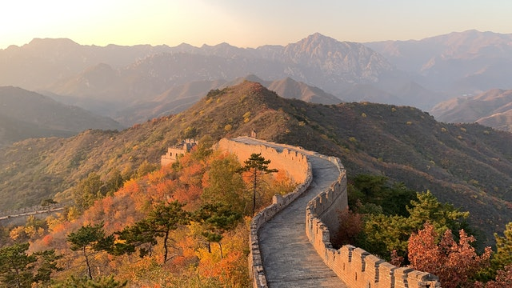
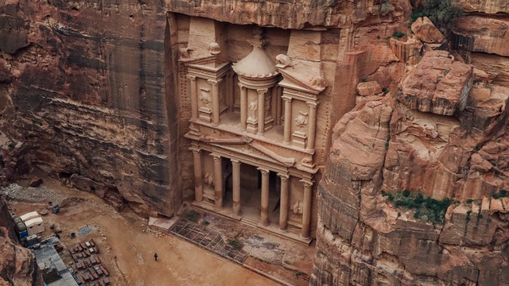
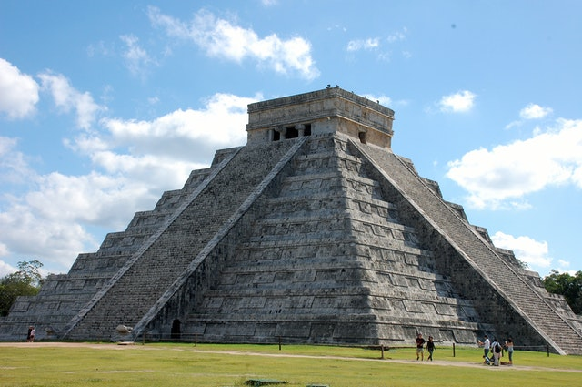
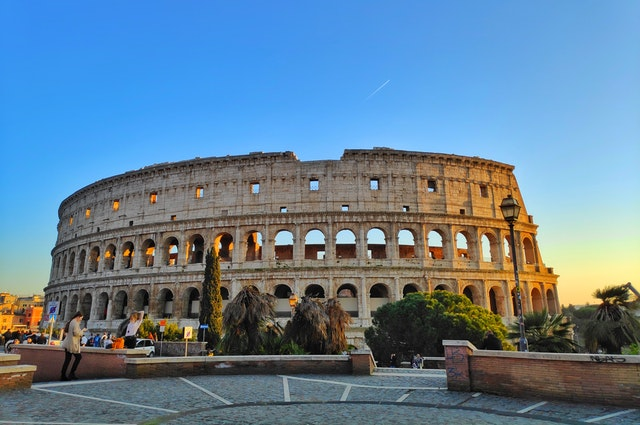
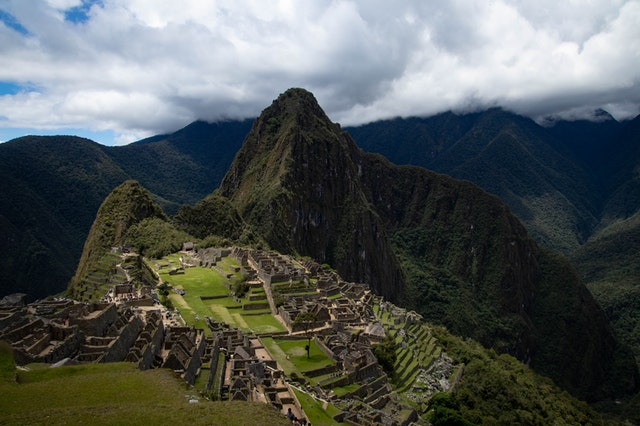
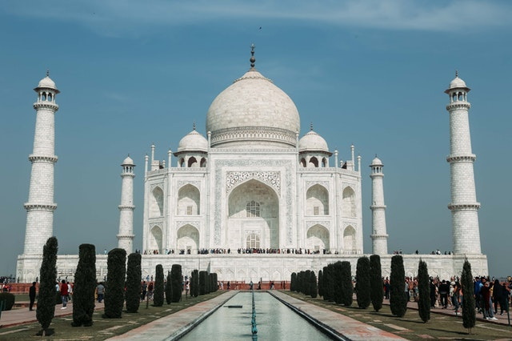

O Cristo Redentor
 Cristo Redentor é uma estátua art déco que retrata Jesus Cristo, localizada no topo do morro do Corcovado, a 709 metros acima do nível do mar, no Parque Nacional da Tijuca, com vista para a maior parte da cidade do Rio de Janeiro, Brasil. Em 2007 foi eleito informalmente como uma das sete maravilhas do mundo moderno. Em 2012 a UNESCO considerou o Cristo Redentor como parte da paisagem do Rio de Janeiro incluída na lista de Patrimônios da Humanidade.
Cristo Redentor é uma estátua art déco que retrata Jesus Cristo, localizada no topo do morro do Corcovado, a 709 metros acima do nível do mar, no Parque Nacional da Tijuca, com vista para a maior parte da cidade do Rio de Janeiro, Brasil. Em 2007 foi eleito informalmente como uma das sete maravilhas do mundo moderno. Em 2012 a UNESCO considerou o Cristo Redentor como parte da paisagem do Rio de Janeiro incluída na lista de Patrimônios da Humanidade.
O monumento foi concebido pelo engenheiro brasileiro Heitor da Silva Costa e construído em colaboração com o escultor francês Paul Landowski e com o engenheiro compatriota Albert Caquot, entre 1922 e 1931 na França, devido o pensamento dos franceses, de que os brasileiros não tinham experiência para construir a estátua. Foi inaugurada no dia 12 de outubro de 1931, dia de Nossa Senhora Aparecida e fica no bairro do Alto da Boa Vista.
Símbolo do cristianismo brasileiro, a estátua se tornou um ícone do Rio de Janeiro e do Brasil. Em 2011, em uma pesquisa de opinião pela internet, o Cristo Redentor foi considerado por 23,5 % de 1 734 executivos de todos os países da região como o maior símbolo da América Latina. O monumento também é um importante ponte de visitação, que recebe, em média, 2 milhões de turistas por ano.
O Cristo Redentor é feito de concreto armado e pedra-sabão. Tem trinta metros de altura, sem contar os oito metros do pedestal, e seus braços se esticam por 28 metros de largura. A estátua pesa 1145 toneladas e é a terceira maior escultura de Cristo no mundo, menor apenas que a Estátua de Cristo Rei de Świebodzi na Polônia (a maior escultura de Cristo no mundo) e a de Cristo de la Concordia na Bolívia (a segunda maior escultura de Cristo no mundo).
Mais detalhes...
A Grande Muralha da China

Grande Muralha da China é uma série de fortificações feitas de pedra, tijolo, terra compactada, madeira e outros materiais, geralmente construída ao longo de uma linha leste-oeste através das fronteiras históricas do norte da China para proteger os Estados e impérios chineses contra as invasões dos vários grupos nômades das estepes da Eurásia, principalmente os mongóis. Várias muralhas estavam sendo construídas já no século VII a.C., que mais tarde foram unidas e tornadas maiores e mais fortes, no que agora é referido como a Grande Muralha. Especialmente famosa é a muralha construída entre 220 e 206 a.C. por Qin Shi Huang, o primeiro Imperador da China. Pouco desta muralha permanece nos dias atuais. Desde então, a Grande Muralha foi reconstruída, mantida e melhorada; a maior parte do trecho existente é da dinastia Ming (1368-1644).
Outras finalidades da Grande Muralha incluíram controles de fronteira, permitindo a imposição de direitos sobre mercadorias transportadas ao longo da Rota da Seda, a regulação ou o encorajamento do comércio e do controle da imigração e da emigração. Além disso, as características defensivas da Grande Muralha foram reforçadas pela construção de torres de vigia, quartéis de tropas, estações de guarnição, capacidade de sinalização por meio de fumaça ou fogo e o fato de que o caminho da Grande Muralha também servia como um corredor de transporte.
A Grande Muralha estende-se de Dandong, no leste, ao Lago Lop, a oeste, ao longo de um arco que delineia grosseiramente a borda sul da Mongólia Interior. Um abrangente levantamento arqueológico, usando tecnologias avançadas, concluiu que as muralhas da dinastia Ming tem um total de 8.850 quilômetros de extensão. Esta é composta por 6.259 km de seções da muralha em si, 359 km de trincheiras e 2.232 km de barreiras defensivas naturais, como montanhas e rios. Outra pesquisa arqueológica descobriu que toda a muralha, com todos os seus ramos, mede 21.196 km.
Mais detalhes...
Petra

Petra, originalmente conhecida pelos nabateus como Raqmu, é uma cidade histórica e arqueológica localizada no sul da Jordânia. A cidade é famosa por sua arquitetura esculpida em rocha e por seu sistema de canalização de água. Outro nome para Petra é Cidade Rosa, devido à cor das pedras do local.
Estabelecido possivelmente já em 312 a.C. como a capital dos árabes nabateus, é um símbolo jordaniano, assim como a atração turística a mais visitada do país. Os nabateus eram árabes nômades que aproveitaram a proximidade de Petra com as rotas comerciais regionais para estabelecê-la como um importante centro comercial. Os nabateus também são conhecidos por sua grande habilidade na construção de métodos eficientes de coleta de água em desertos áridos e seu talento em esculpir estruturas em rochas sólidas.
Petra encontra-se na encosta de Jebel al-Madhbah (identificado por alguns como bíblico Monte Hor) em uma bacia entre as montanhas que formam o flanco oriental de Arabah (Wadi Araba), o grande vale que vai do Mar Morto ao Golfo de Aqaba. O local é um Patrimônio Mundial da UNESCO desde 1985.
O sítio arqueológico permaneceu desconhecido para o mundo ocidental até 1812, quando foi introduzido pelo explorador suíço Johann Ludwig Burckhardt. Foi descrita como "uma cidade rosa e vermelha tão velha quanto o tempo" em um poema de John William Burgon. A UNESCO a descreveu como "uma das mais preciosas propriedades culturais da herança cultural do homem". Petra foi nomeada entre uma das Novas Sete Maravilhas do Mundo em 2007 e também foi escolhido pela revista Smithsonian como um dos "28 lugares para ver antes de morrer".
Mais detalhes...
Chichén Itzá

Chichén Itzá foi uma grande cidade pré-colombiana construída pela civilização maia no final do período clássico. O sítio arqueológico está localizado no município de Tinum, no estado de Yucatán, México.
Chichén Itzá era um polo urbano importante dos maias na planície norte no início (600-900) e no final (cerca 800-900) do período clássico e também no início do período pós-clássico (cerca de 900-1200). O local exibe vários estilos arquitetônicos, reminiscentes dos estilos vistos no México central. Acreditava-se que a presença de estilos desta região era sinal da migração direta ou mesmo da conquista do México central, mas a maioria de interpretações contemporâneas veem a presença destes estilos não maias mais como o resultado da difusão cultural.
A cidade era um dos maiores centros urbanos dos maias e provavelmente foi uma das grandes cidades míticas, ou Tollans, referidas na literatura mesoamericana. Chichén Itzá pode ter tido a população mais diversa no mundo maia, um fator que poderia ter contribuído à variedade de estilos arquitetônicos encontrados no local.
As ruínas de Chichén Itzá são de propriedade federal e a administração do local é mantida pelo Instituto Nacional de Antropologia e História do México. A terra sob os monumentos era de propriedade privada até 29 de março de 2010, quando foi comprada pelo estado de Yucatán. Chichén Itzá é um dos sítios arqueológicos mais visitados no México; cerca de 1,4 milhões de turistas visitam as ruínas a cada ano.
Mais detalhes...
Coliseu

O Coliseu, também conhecido como Anfiteatro Flaviano, é um anfiteatro oval localizado no centro da cidade de Roma, capital da Itália. Construído com tijolos revestidos de argamassa e areia, e originalmente cobertos com travertino é o maior anfiteatro já construído e está situado a leste do Fórum Romano.
A construção começou sob o governo do imperador Vespasiano em 72 d.C. e foi concluída em 80, sob o regime do seu sucessor e herdeiro, Tito. Outras modificações foram feitas durante o reinado de Domiciano (81-96). Estes três imperadores são conhecidos como a dinastia flaviana e o anfiteatro foi nomeado em latim desta maneira por sua associação com o nome da família (Flavius).
O Coliseu poderia abrigar, estima-se, entre 50 mil e 80 mil espectadores, com uma audiência média de cerca de 65 mil pessoas. O edifício era usado para combates de gladiadores e espetáculos públicos, tais como simulações de batalhas marítimas (em um curto período de tempo como o hipogeu era inundado através de mecanismos de apoio), caças de animais selvagens, execuções, encenações de batalhas famosas e dramas baseados na mitologia clássica. O prédio deixou de ser usado para entretenimento na era medieval. Mais tarde foi reutilizado para vários fins, tais como habitação, oficinas, sede de uma ordem religiosa, uma fortaleza, uma pedreira e um santuário cristão. Em 2007, o monumento foi eleito informalmente como uma das sete maravilhas do mundo moderno.
Embora parcialmente arruinado por causa de danos causados por terremotos e saques, o Coliseu é ainda um símbolo da Roma Imperial. É uma das atrações turísticas mais populares da capital italiana e tem também conexões com a Igreja Católica Romana, pois a cada Sexta-feira Santa, o Papa guia a Via Crúcis que começa na área em torno do Coliseu. O Coliseu também é retratado na versão italiana da moeda de euro de cinco cêntimos.
Mais detalhes...
Machu Picchu

Machu Picchu (em quíchua Machu Picchu, "velha montanha"), também chamada "cidade perdida dos Incas", é uma cidade pré-colombiana bem conservada, localizada no topo de uma montanha, a 2 400 metros de altitude, no vale do rio Urubamba, atual Peru.
Foi construída no século XV, sob as ordens de Pachacuti. O local é, provavelmente, o símbolo mais típico do Império Inca, quer devido à sua original localização e características geológicas, quer devido à sua descoberta tardia em 1911. Apenas cerca de 30% da cidade é de construção original, o restante foi reconstruído. As áreas reconstruídas são facilmente reconhecidas, pelo encaixe entre as pedras. A construção original é formada por pedras maiores, e com encaixes com pouco espaço entre as rochas.
Consta de duas grandes áreas: a agrícola formada principalmente por terraços e recintos de armazenagem de alimentos; e a urbana, na qual se destaca a zona sagrada com templos, praças e mausoléus reais. A disposição dos prédios, a excelência do trabalho e o grande número de terraços para agricultura são impressionantes, destacando a grande capacidade daquela sociedade. No meio das montanhas, os templos, casas e cemitérios estão distribuídos de maneira organizada, abrindo ruas e aproveitando o espaço com escadarias. Segundo a história inca, tudo planejado para a passagem do deus sol.
O lugar foi elevado à categoria de Patrimônio mundial da UNESCO, tendo sido alvo de preocupações devido à interação com o turismo por ser um dos pontos históricos mais visitados do Peru. A organização suíça New Open World Corporation (NOWC) em votação mundial gratuita pela internet e ligações telefônicas (mais de 100 milhões de votos pelo mundo) e com analise de arquitetos e arqueólogos classificou Machu Picchu como umas das sete maravilhas do mundo moderno. Há diversas teorias sobre a função de Machu Picchu, e a mais aceita afirma que foi um assentamento construído com o objetivo de supervisionar a economia das regiões conquistadas e com o propósito secreto de refugiar o soberano Inca e seu séquito mais próximo, no caso de ataque.
Mais detalhes...
Taj Mahal

O Taj Mahal é um mausoléu situado em Agra, na Índia, sendo o mais conhecido dos monumentos do país. Encontra-se classificado pela UNESCO como Patrimônio da Humanidade. Foi anunciado em 2007 como uma das sete maravilhas do mundo moderno.
A obra foi feita entre 1632 e 1653 com a força de cerca de 20 mil homens, trazidos de várias cidades do Oriente, para trabalhar no suntuoso monumento de mármore branco que o imperador Shah Jahan mandou construir em memória de sua esposa favorita, Aryumand Banu Begam, a quem chamava de Mumtaz Mahal ("A joia do palácio"). Ela morreu após dar à luz o 14º filho, tendo o Taj Mahal sido construído sobre seu túmulo, junto ao rio Yamuna.
Assim, o Taj Mahal é também conhecido como a maior prova de amor do mundo, contendo inscrições retiradas do Alcorão. É incrustado com pedras semipreciosas, tais como o lápis-lazúli entre outras. A sua cúpula é costurada com fios de ouro. O edifício é flanqueado por duas mesquitas e cercado por quatro minaretes. Supõe-se que o imperador pretendesse fazer uma réplica do Taj Mahal original na outra margem do rio, em mármore preto, mas acabou morto antes do início das obras por um de seus filhos.
Mais detalhes...